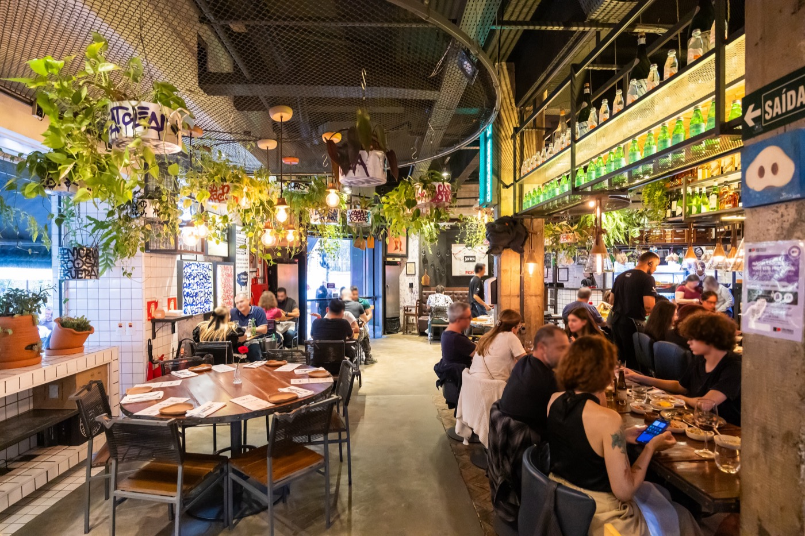
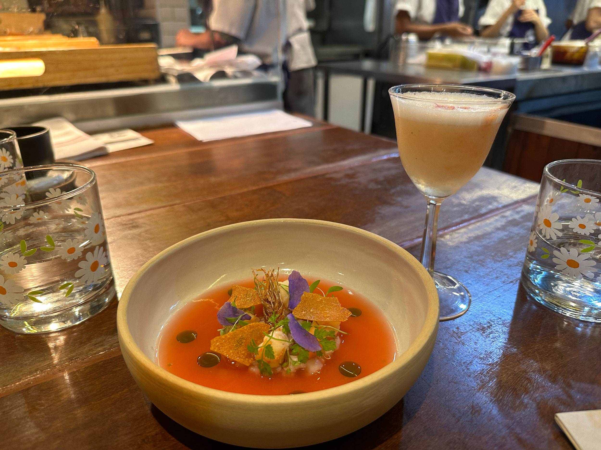
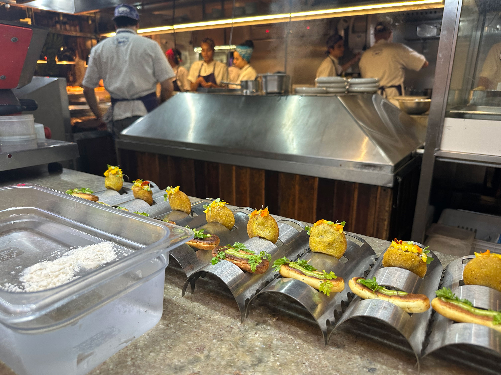

A Casa do Porco
El restaurante más famoso del centro, Bib Gourmand 2026
Qué pedir: Menú degustación de cerdo, sushi de papada. Ventanilla de sándwich para llevar
- Precio
- R$$ (R$140-240)
- Reserva
- Sí, o fila
R. Araújo 124
Crédito de las fotografías
Fotografía: Sandro Portaluri, vía The Infatuation. Fuente original ↗
Fotografía: Gisele Regatão, vía The World (PRI). Fuente original ↗
Fotografía: Gisele Regatão, vía The World (PRI). Fuente original ↗